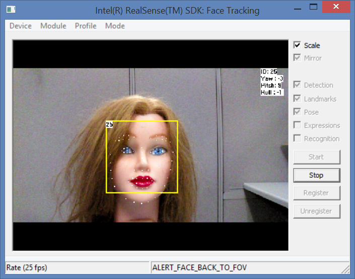

|
The DF_FaceTracking and DF_FaceTracking.cs samples show how to use the SDK face detection and landmark detection interfaces.
The main window is shown as in Figure 117. From the menu, you can choose the following items:
| • | Device: Select from a list of I/O devices to be paired with the face module. |
| • | Module: Select from a list of face detection and landmark detection modules. |
| • | Profile: Select the algorithm configuration: 2D/3D tracking or detection. |
| • | Mode: Select whether to do live streaming, recording or playback. If the playback or recording mode is selected, the sample will prompt for the playback or recording file name. |
From the side buttons, you can choose the following options:
| • | Scale: Scale the image to the size of the display window, or the actual size. |
| • | Mirror: Flip the image horizontally to show the camera view or the user view. |
| • | Detection: Display a rectangle around any recognized faces. |
| • | Landmarks: Display dots on recognized landmark positions. |
| • | Pose: Display the pose information on the right of the screen. |
| • | Expressions: Display the facial expression scores on the screen. |
| • | Recognition: Display the face identification information on the screen. |
| • | Start: Start the pipeline for face detection and landmark detection. |
| • | Stop: Stop the detection. |
| • | Register: Register the user for face recognition. |
| • | Unregister: Unregister the user for face recognition. |

Figure 117: Face Tracking Main Window
|